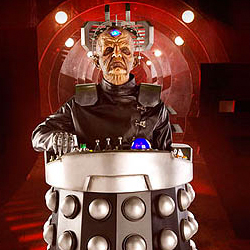

| Home | The Doctors | The Villains | |
|
|||
|
Davros is a character from the long-running British science fiction television series Doctor Who. Davros is an archenemy of the Doctor and is the creator of the Doctor's deadliest enemies, the Daleks. Davros is a genius who has mastered many areas of science but also a megalomaniac who believes that through his creations he can become the supreme being and ruler of the Universe. Davros was created by screenwriter Terry Nation. Davros is from the planet Skaro, whose people, the Kaleds, were engaged in a bitter thousand-year war of attrition with their enemies, the Thals. He is horribly scarred and crippled, a condition that various spin-off media attribute to his laboratory being attacked by a Thal shell. He has one functioning hand and one cybernetic eye mounted on his forehead to take the place of his real eyes, which appear to have been fused shut; for much of his existence he depends completely upon a self-designed mobile life-support chair which encloses the lower half of his body. It would become an obvious inspiration for his eventual design of the Dalek. The condition of the lower half of his body is unknown; he is physically incapable of leaving the chair without dying. Davros's voice, like those of the Daleks, is electronically distorted. His manner of speech is generally soft and contemplative, but when angered or excited he is prone to ranting outbursts that resemble the hysterical, staccatissimo speech of the Daleks. |